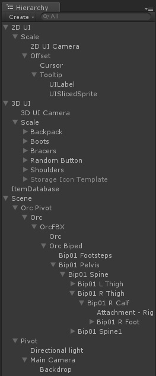
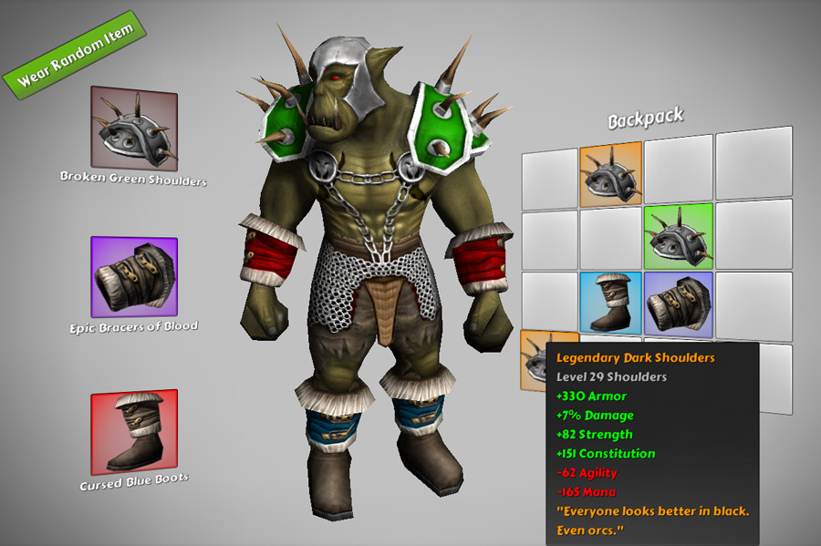

13.Character Inventory ※アセットの中のシーンは13ではなくXです。¶
このため、UIのNGUIのパッケージにバンドルされた最も複雑なExampleですが、UIがないということから始めましょう。このExampleでは、実際にランダムなレベルと品質の設定で、これらのアイテムの代替バージョンを生成するためにユーザーが指定したアイテムを使用して、かなり高度なランダムアイテム生成システムを備えています。
これはNGUIに付属している bonus のExampleであることに注意してください。ゲームのために在庫管理システムの実装に興味を持っていない場合、安全にどのように関与していると、すべてでは、UIに関連していない大多数のようにそれをスキップすることができます。
このExampleの目的は、NGUIが他の先進的なシステムと統合する方法を探ることでした。このように、このExampleでは、 “InvEquipment“ 、 “InvBaseItem“ 、 “InvTools“ など、などのプレフィックス “INV“ で始まるしたカスタムスクリプトの多くを備えています。便利な、カスタムスクリプトのすべてが単一の場所で見つけることができます： InventorySystem フォルダ内です。

まだ読んでいますか？大丈夫ですね。このアイテムが作成された方法から始めましょう： InvDatabase 。 ItemDatabase ゲームのオブジェクトの選択です。
このExampleで使用されるすべてのアイテムが作成および格納される場所です。見ることができるとして、アイテムを移動して編集することができますカスタムインスペクタツールが表示されます。
[Alt] + [Shift] + [i] キーを押すことでいつでも名前でオブジェクトを発見できます（またはトップアップインベントリメニューを経由して）。
それらが最大レベルであったかのようにすべてのアイテムの統計情報が入力されます。これは、簡単にあるアイテムと別のアイテムがどちらがベターなのかを推測して比較できます。念頭に置いて、ここでゲーム内アイテムを作成していません。単に実際のアイテムを生成するために使用されるアイテムのテンプレートを作成しています。システムは Game Items を生成するとき、それらはテンプレートで指定されたアイテムレベルの範囲内で作成され、ランダムな品質レベルが与えられます。
最後のゲームアイテムの統計情報は、テンプレートの統計を取って、アイテムの質によって調整されたアイテムのレベルでそれを混合することによって計算されます。
次のコンポーネントに移動する前に、ここにある Slot フィールドに注意してください。各アイテムは、特定のスロットに行くことができます。後でアイテムを装備する場合は、 Attachment フィールドで指定されたプレハブは、このフィールドに一致するキャラクター1人1人のスロット用にインスタンス化されます。こういうわけで、2つの腕甲、2つのショルダーパッド、2つのブーツが1つのゲームオブジェクトにアタッチされているだけで定義されているのをご覧下さい。
これらの点は、キャラクター上にある場所を確認するためにはHierarchyビューで “Attachment” を検索してください。それらを配置するときに、はい、眼球、それらをしました。これらのゲームオブジェクトに InvAttachmentPoint スクリプトに注意してください。すべての装備アイテムがインスタンス化され、これらのゲームオブジェクトの子としてアタッチされています。
シーンの実際の階層構造を調べる場合、 2D UI が1つ、 3D UI が1つであり、 Scene 自体のいずれか、3つのルートのゲームオブジェクトがあることに気付くでしょう。
パネルツールを起動するには [Alt] + [Shift] + [P] を押してあれば、また、それらのルートノードのそれぞれが UIPanel がアタッチされていることに気づくでしょう。
- 2D UI は、それが画面上に鮮明な見ていたように、 Tooltip に使用されます。
- 3D UI は見るすべてのUI要素を描画するために使用されます：ボタン、アイテムスロット、アイテム、バックパック。
- Scene 内にキャラクターが配置されているが、それはまた、 background を描画するために使われるウィジェットを含んでいます。
Tooltip で始めてみましょう。hierarchy内でそれを選択した場合は、それが添付され UITooltip スクリプトを持っているnotthatます。
このカスタムスクリプトは、指定したアイテムのツールチップを作成するために使用されます。それは知っている必要がありますすべては、それがテキストを包み込むようにサイズを変更するにはテキストを埋めるために、適切に texg ラベルを自分自身を配置することができますので、それを描画するために使用されるカメラ、背景スプライトです。“ Scaling Transitions ”が有効になっている場合は、ツールチップは、それ“ swoop in ”を作る、スケーリング、色調整の組み合わせを介して表示されます。このスクリプトはコードを介して使用されている方法は単純です： UITooltip.ShowItem(<gameアイテム>);
3D UI に移るには、無効な Storage Icon Template が表示されることがあり、すでに、実際のバックパックのウィジェットは、エディタ中にどこにも見つからないことをチャンスに気づいたされています。 UIItemStorage - Backpack ゲームオブジェクトのスクリプトを介して動的に作成されるためです。
そのゲームのオブジェクトを選択し、スクリプトを調べることによって、あなたはそれがバックパックのセルを作成するために使用するテンプレートのゲームオブジェクトに加えて、アイテム、行、列の最大数を指定することができていることがわかります。今、それはバックパックに限らずです - ItemStorageは、何でもできます - アイテムリストのストアは、ゲーム内のチェスト、金庫も...他のプレイヤーの在庫もです。バックパックの作成に加えて、このスクリプトはいくつかの有用な機能を持っています。 コード内で使用することができます。
- UIItemStorage.GetItem(スロット) を使用すると、指定したスロット内のアイテム、またはない場合、 ’null’ を示します。
- UIItemStorage.Replace(スロット、ゲームアイテム) を使用すると、それが置き換えられたアイテムを返し、別のいずれかで指定されたスロットにアイテムを置き換えることができます。
- コンテナからアイテムを削除したい場合は、単に2番目のパラメータとして ‘null‘ を渡します。あなたが効果的に完全にそれを取り除くために戻されたアイテムを破棄することができます。
- もちろん、常に UIItemStorage.items にアクセスすることによって、アイテムのコンテナ内に何があるかを見ることができます。
disabled になっている Storage Icon Template を選択した場合には、 UIItemStorage クラスで動作し、それに接続されている UIStorageSlot スクリプトを、気づくでしょう。それはあなたがアイテムをピックアップし、アイテムが削除されていることをストレージクラスに通知することができものだ。スクリプト自体は短いですが、それは UIItemSlot から派生しているだけです - また UIEquipmentSlot で使用されている一般的なスクリプト - 3インベントリのアイコン上でスクリプトを実行します。要するに、これらのスクリプトのすべては、それぞれのコンテナからアイテムを移動するだけを許可しています。
UIEquipmentSlot は、オークを選択することによって見つけることができ、 InvEquipment クラスで直接動作します。
独自のカスタムコンテナを作成するときには、 UIItemSlot （例として UIEquipmentSlot を使用します）から派生し、それはカスタムコンテナで動作することにより、アイテムスロットのクラスを作成したくなるでしょう。
最後に、尋ねるかもしれ - ここでオークの最初のアイテムは、から来ていますか？答えは？ EquipItems スクリプトは、オークに接続されている。これは、アイテムIDを取得し、インベントリの機器システムが装備されているランダムなゲームアイテムを生成します。
ええと、それはそれについてです！
